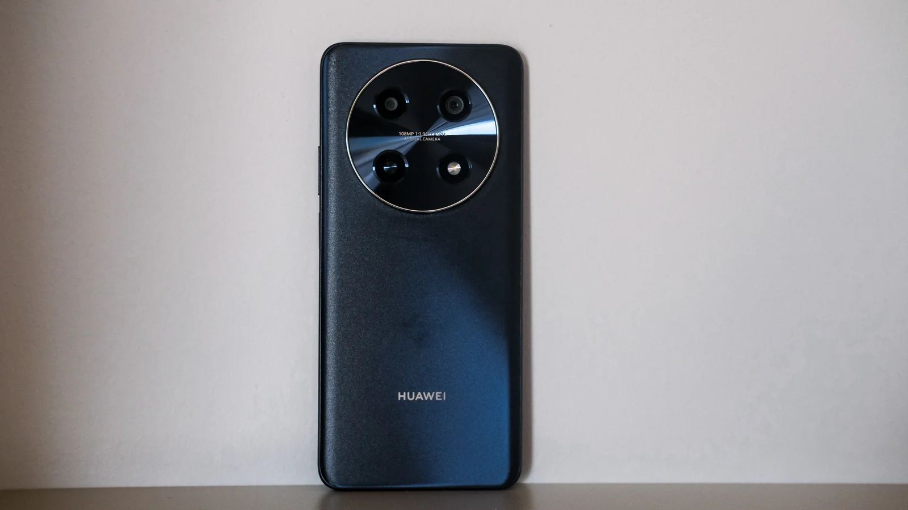
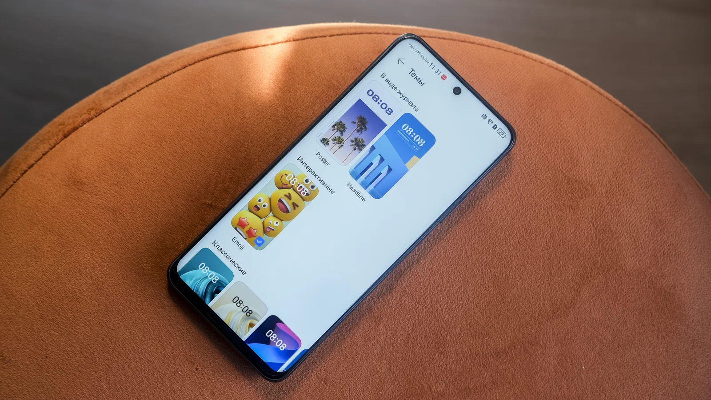
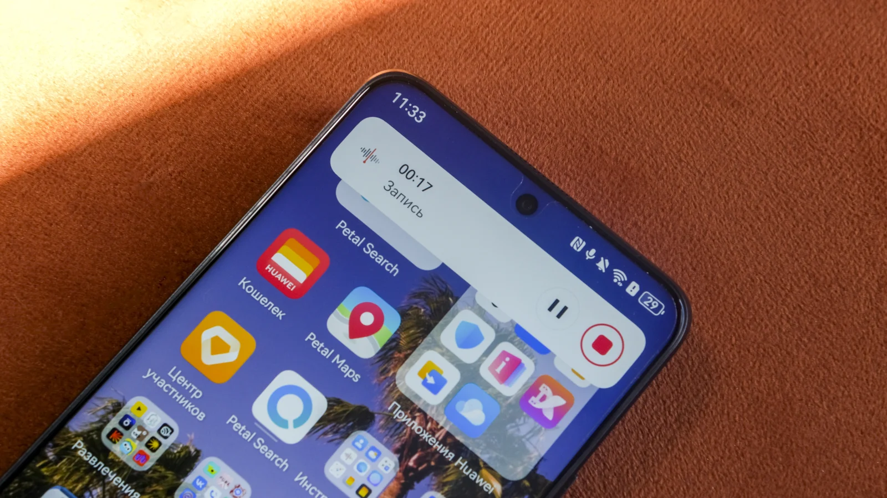
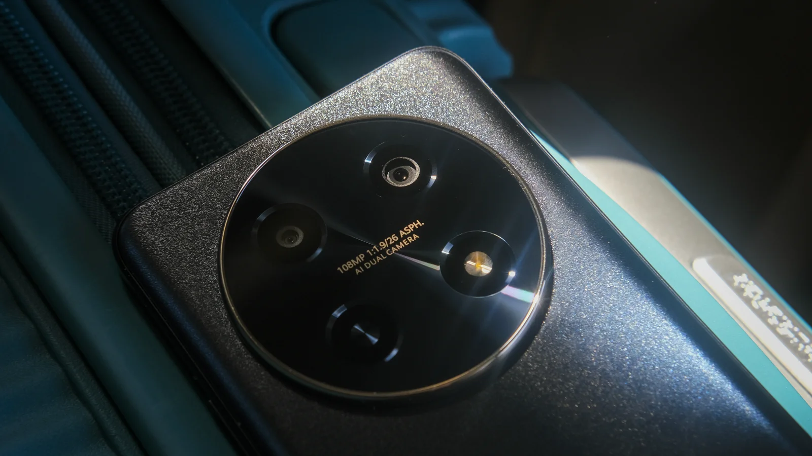
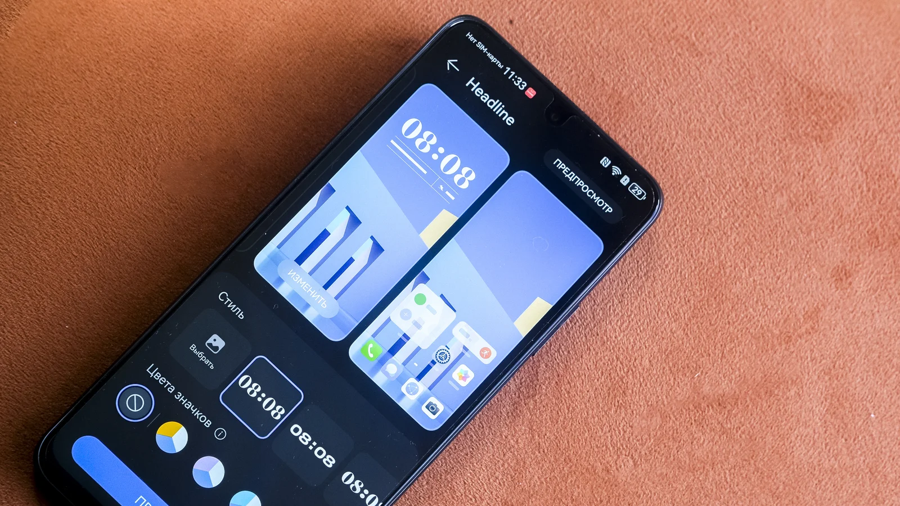

5 причин купить смартфон Huawei nova 12i
1. Удобный размер и привлекательный дизайн
Huawei nova 12i относится к категории стандартных (по современным меркам) смартфонов: 163 мм х 75 мм при весе в 200 граммов. Как и у всех смартфонов компании Huawei среднего класса, нареканий по качеству — нет. Корпус пластиковый, но собран аккуратно, не маркий и не царапучий. На выбор есть два цвета: зеленый и черный. Второй на свету больше похож на глубокий темно-синий, выглядит дорого.
Камера, несмотря на внушительный размеры, не перевешивает смартфон, что позволяет удобно пользоваться им одной рукой, не боясь, что тот выпадет из рук. Блок изящно выделяется золотой окантовкой.
2. Все самое важное всегда на экране
Экран занимает 94,15% площади передней поверхности смартфона. Диагональ дисплея — 6,7 дюйма с разрешением 1080×2388 пикселей. Боковых рамок почти нет, верхней — тоже, камера вписана прямо в дисплей. Снизу же есть традиционный для бюджетных смартфонов «подбородок».
Компания Huawei всегда старается вложить максимум технологий даже не в топовые смартфоны. Huawei nova 12i не стал исключением. Здесь есть функция «Плавного затемнения», которая адаптирует яркость экрана под окружающее пространство. Еще одна «фишка» — технология AOD (Постоянное отображение экрана-заставки). Когда экран выключен, пользователь может коснуться его и посмотреть информацию о времени, уровне заряда, погоде, а также статус в некоторых приложениях.
3. Камера для фотографий в отпуске (и не только)
Основная камера Huawei nova 12i — на 108 Мп со светосильным объективом с диафрагмой f/1.9 и большим сенсором 1/1,67 дюйма. Такая комбинация характеристик позволяет получить высокое разрешение снимком и качественный свето-теневой рисунок на снимках.
Также камера поддерживает технологию объединения пикселей «9 в 1», которая позволяет каждому пикселю получить большее количество света. Лучше всего эта функция показывает себя в условиях слабой освещенности, позволяя даже ночью или в сумерках получить достаточно яркие снимки с хорошей детализацией.
Фотосъемка — это всегда фиксация момента, особенно в путешествиях. И так обидно, когда момент упущен из-за того, что камера не успела отработать или просто смазала кадр. Чтобы такого не происходило, в Huawei nova 12i есть технология ZSL, минимизирующая задержку срабатывания затвора камеры. На выходе получаются четкие снимки даже очень быстро бегающих котиков.
Фронтальная камера при этом не претерпела особых изменений: 8 Мп и фирменные фильтры для ретуши. В итоге получаем крайне достойные селфи.
А вот видео, к сожалению, далеко не самая сильная сторона Huawei nova 12i, съемка только 1080p и 30 к/с.
4. Чтобы гулять и работать весь день
Батарея — то, на что компания Huawei также всегда обращает внимание. В итоге характеристики смартфона из среднего сегмента оказываются крайне достойными. В Huawei nova 12i пользователь получает мощную батарею 5000 мА•ч и комплектную зарядку Huawei SuperCharge Turbo 40 Вт, которая заряжает смартфон на 50% меньше чем за 30 минут. Все это дополняется обязательными технологиями на базе искусственного интеллекта, которые следят за приложениями, которыми вы не пользуетесь, продлевая время работы смартфона.
5. Без лишних слов — EMUI 14
EMUI — фирменная оболочка операционной системы мобильных устройств компании, которая каждый год улучшается. Актуальная версия EMUI 14 также получила несколько интересных улучшений, о которых строит сказать.
Во-первых, персонализация экрана блокировки. Теперь пользователи могут создавать темы на базе своих любимых фотографий. Есть два варианта отображения: хедлайнер и постер. В обоих случаях можно выбирать свои фотографии, цвета шаблонов и значков интерфейса.
Бонус: интерактивные обои с объемными эмодзи, которые могут меняться в течение дня: просто, но очень поднимает настроение.
Возвращаясь к вопросам эффективности, отметим функцию «Интерактивный вид», которая позволяет отслеживать статус процессов в разных приложениях. Работает просто — пользователь видит всю информацию на специальном интерактивном значке.
Смартфон Huawei nova 12i уже доступен в магазинах по цене от 19 999 ₽ за устройство на 128 ГБ и 21 999 ₽ за устройство на 256 ГБ.